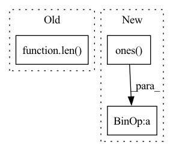

Pattern ID :27783

Before Change
matrix.indices()[0, :] != row_index]
replacement_row_indices = torch.stack(
[torch.tensor(row_index, device=matrix.device)]*len(row.values()))
replacement_indices = torch.stack([replacement_row_indices,
row.indices()[1, :]])
new_indices = torch.cat([new_indices, replacement_indices], -1)
After Change
dtype=matrix.dtype
)
addition_matrix = torch.sparse_coo_tensor(
torch.stack([torch.ones(row.shape[-1])*row_index,
torch.arange(row.shape[-1])], 0),
row.squeeze(),
size=matrix.shape, device=matrix.device,
In pattern: SUPERPATTERN
Frequency: 4
Non-data size: 3
Instances
Fragment ID: 82288615
Project Name: v0lta/pytorch-wavelet-toolbox
Commit Name: ced7891d6e879825d3e5dc0d52e2c7fb08b22440
Time: 2021-09-27
Author: moritz@wolter.tech
File Name: src/ptwt/sparse_math.py
M Class Name: AnonimousClass
N Class Name: AnonimousClass
M Method Name: sparse_replace_row(3)
N Method Name: sparse_replace_row(3)
M Parent Class:
N Parent Class:
M File Name: src/ptwt/sparse_math.py
N File Name: src/ptwt/sparse_math.py
M Start Line: 82
M End Line: 107
N Start Line: 82
N End Line: 105
'>
Before Change
// Truncate or extend based on sustain duration.
if num_samples < len(out_):
out_ = out_[:num_samples]
elif num_samples > len(out_):
hold_samples = num_samples - len(out_)
assert hold_samples.ndim == 0
out_ = torch.nn.functional.pad(
After Change
out_ = out_[:num_samples]
else:
hold_samples = num_samples - len(out_)
sustain = torch.ones(hold_samples) * self.p("sustain")
out_ = torch.cat((out_, sustain))
return out_
'>
Fragment ID: 82288612
Project Name: turian/torchsynth
Commit Name: f1d3d483a2f9da505cc84e81d601f3c7f9f6666a
Time: 2021-01-29
Author: jordieshier@gmail.com
File Name: src/ddspdrum/torchmodule.py
M Class Name: TorchADSR
N Class Name: TorchADSR
M Method Name: note_on(2)
N Method Name: note_on(2)
M Parent Class: TorchSynthModule
N Parent Class: TorchSynthModule
M File Name: src/ddspdrum/torchmodule.py
N File Name: src/ddspdrum/torchmodule.py
M Start Line: 290
M End Line: 300
N Start Line: 293
N End Line: 301
'>
Before Change
torch.zeros(
len(grapheme_encoded), 1
).to(self.device),
torch.ones(len(grapheme_encoded))
)
p_seq, char_lens, encoder_out = self.hparams.model(
grapheme_encoded=grapheme_encoded,
After Change
if not phn_encoded_bos:
grapheme_encoded_data, _ = grapheme_encoded
phn_encoded_bos = (
torch.ones(
len(grapheme_encoded_data), 1
).to(grapheme_encoded_data.device) * self.hparams.bos_index,
torch.ones(
len(grapheme_encoded_data)
).to(grapheme_encoded_data.device)
'>
Fragment ID: 82288617
Project Name: speechbrain/speechbrain
Commit Name: 3470de034190f705e441b3fc700ec644adf38e58
Time: 2021-09-05
Author: flexthink@users.noreply.github.com
File Name: recipes/LibriSpeech/G2P/evaluate.py
M Class Name: G2PEvaluator
N Class Name: G2PEvaluator
M Method Name: _get_phonemes(3)
N Method Name: _get_phonemes(3)
M Parent Class:
N Parent Class:
M File Name: recipes/LibriSpeech/G2P/evaluate.py
N File Name: recipes/LibriSpeech/G2P/evaluate.py
M Start Line: 107
M End Line: 111
N Start Line: 107
N End Line: 116